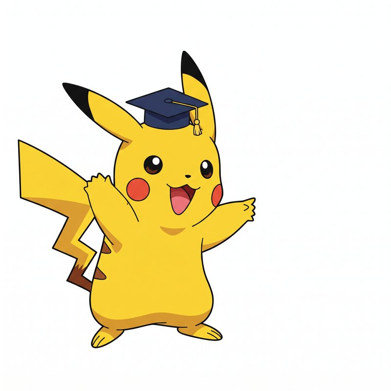
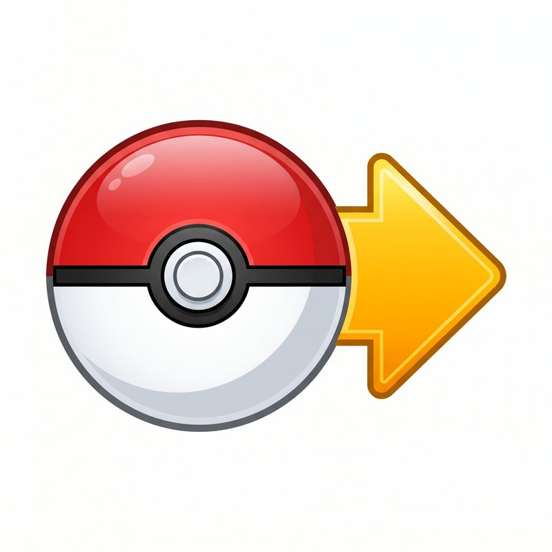

P3 寶可夢操作小幫手
未登入
主頁
主頁
準備出發做任務！
請先選好班別、學號（不用輸入姓名），再選課次與模式。
1. 選擇班別
P3A
P3B
P3C
P3D
P3E
P3F
2. 選擇學號
3. 選擇課次（自動讀取雲端總表）
第1課_視窗好幫手（9步驟）
第2課_認識互聯網（5步驟）
第3課_網絡搜尋（6步驟）
第4課_進階搜尋（5步驟）
第5課_會走會說的Scratch Cat（6步驟）
第6課_循環的圖案（6步驟）
第7課_迷宮遊戲（基礎）（8步驟）
第8課_迷宮遊戲（進階）（7步驟）
開始任務 ▶
第5課_水和雲動畫
1 / 11
任務 1 · 套用小水滴佈景主題
步驟 1.1

第一層：書本頁碼
第二層：示範 GIF
課本位置：
避坑提醒：
示範動圖載入失敗，請先對照「第一層：書本頁碼」或向老師舉手示意！
🔍 放大看清楚
恭喜完成本課挑戰！
返回主頁
匯出本機學習記錄 (CSV)
✕ 關閉放大檢視
◀ 上一步
主頁
下一步 ▶